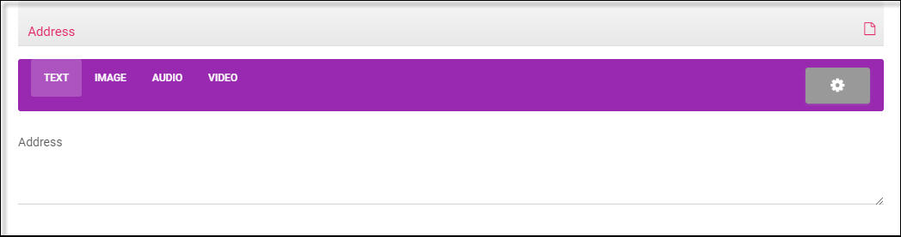
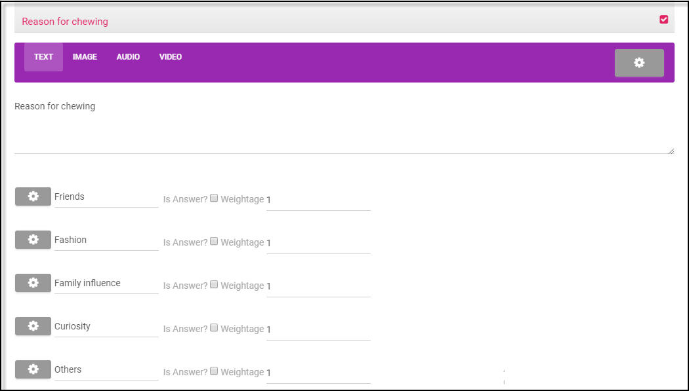
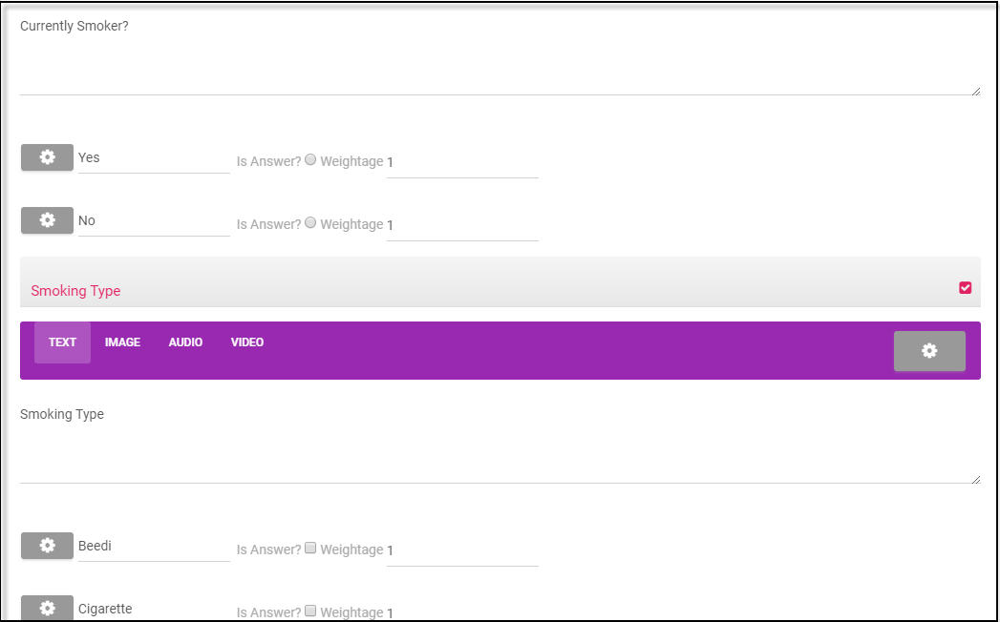

Study Template¶
`
:titlesonly:
:hidden:
`
A study template is designed to gather information about individuals, their life style and habits. This template is used in procuring details of individuals visiting a medical camp.
Create a Study Template¶
To create a new study template:
- On the Home page, Go to Manage menu, select Study Templates.
- Click Create Study Template. A new study template details form is available on screen.
To add template details:
- Under the Template Details tab, provide title and brief information about the template in the Name and Description text box.
- By default, Is Active check box is checked out i.e., the study template is currently available to all.
- Associate a picture of the study template for identification. Click Browse, choose a system file, and click Add. OR
- Select External link, add link in the External link text box, Click Upload icon. OR
- Click Capture icon. A message window confirms if system camera can be turned on and, click Yes.
- The system camera is turned on to an image in-front of the screen, click Capture. The captured image will be uploaded to represent the template.
- Click on the image file for image preview or click Remove to delete the image.
- Click Save. A Modify, Publish and Delete options will be available in the form.
The new study template will be in the draft state.
Survey Questionnaire¶
A survey questionnaire is created to register and conduct a survey for follow-up on a case study. The questionnaire will require the configurations as mentioned below.
- Multiple language settings
- Add questions of single, multiple answer choices, text, number, date and time.
- Configure dependent questions, attach documents, image files, video/audio URL for questions.
- Add comments, hints for answers and highlight answer choices.
- Support multiline text and add weightages to auto-calculate score based on answer choices.
- Show questions based on answers, mark correct answer choices and associate score to each question.
Registration Survey¶
The field user procures basic details that are required for identification and submits it to the specialist for review.
Follow-up Survey¶
If for a particular case, the reports are not clear or the case requires immediate attention, then a follow-up by a specialist will be required. When a specialist marks the case for follow-up, the field user has to conduct a follow up survey and collect all the required details.
Create Survey Questionnaire¶
- On the Survey Template form, click Modify, select the Registration Survey/Follow-up Survey tab.
- Click Settings icon. A drop-down form for initial settings will appear on screen.
- By default, mode is set as “Page” and the language is set as “Default”. Questions will be created in the language that is set as default.
- To set questions in a another language, click drop-down of Add Language, select a language from the list.
- For multiple language settings, click Add New icon, choose another language. The selected languages will be listed under the Available Language list.
Add Questions¶
Questions that require answers of type text, multiline, number, radio-button, checkbox, drop-down, date, date & time, time, phone and range can be created in the questionnaire.
- Under the Registration/Follow-up tab, select Add Page.
- A page with a new question will appear on screen. You have to edit the question text to add a new question.
Text, Multiline Answer
You can add questions that require a single line or multiple line answers.
- On the Question form, click drop-down of Add Question, select Text.
- Click New Question. Enter a question that requires user to type in answers through the keyboard.
A sample question that requires a multiline answer text is as shown below.
Single Answer Choice
You can add questions which may require one answer choice. It is configured using radio button or drop-down.
- On the question form, click on the drop-down of Add Question, select Radio button.
- Click New Question; enter question text under the Text tab.
- Click +, The Answer1, choice 1 as the first option appears on screen. Type in the Answer choice.
- Click +, The Answer2, choice 2 for the second option appears on screen. Type in the Answer choice.
Multiple Answer Choices
You can add questions with multiple answer choices using the checkbox type.
- On the question form, select checkbox from the drop-down of Add Question.
- Click New Question; enter question text under the Text tab.
- Click +, The Answer1, choice 1 as the first option appears on screen. Type in the Answer choice.
- Follow the above steps to add other answer choices.
A sample question with checkbox type of answer choice is as shown below.
Other Answer Types
You can add questions which may require a number, date, time as answers.
To add question that requires a numerical answer:
- Go to Add Question, choose Number from the drop-down, tap on New Question.
- Enter question text under the Text tab.
- Click +. In the Answer1 text box, specify a number as an answer choice:
To add question that requires date as an answer choice
- Go to Add Question, select a valid date (day: month: year) as an answer choice from the calendar.
To add question that requires a valid time as an answer choice:
- Go to Add Question, select a valid time in (hours: minutes: seconds) as an answer choice.
- But, if both Date & Time are selected then both date and time have to be specified.
If question is based on a picture or an image,
- Choose a picture or image file from your system files and click upload. Or
- Specify an image URL to upload the picture.
If an audio attachment is provided to support your question,
- Choose file, select an audio attachment from the list, click Add. Or
- Specify an audio URL as an attachment.
If a video attachment is provided to support your question,
- Choose a video attachment file from your system,and click Add. OR
- Specify a video URL from the list.OR Select a video player either YouTube or Vimeo with video ID of that URL.
Mandatory Questions
Generally, a survey question is set as mandatory,if users are assessed based on their answers. To configure a mandatory question:
- On the create question form, add a new question of a type.
- For the current question, tap on Settings icon. Checkout the Is Mandatory checkbox.
You will not be able to save the visit unless you provide an answer to the current question.
Dependent Questions
A specific set of questions will appear if user provide a specific answer else, another set of questions will appear on screen. To configure dependent questions:
- On the create question form, add a new question of type text, radio, checkbox etc.,
- Click Settings icon for the current question, Go to Dependent Question section, and click Add Icon.
- Choose a question from the drop-down, select an answer choice for which this question should appear.
- Or Type in an expression for which this question should appear as an answer.
A sample dependent question configuration is as shown below.
Highlight Answer choices
Certain answer choices that users provide can be highlighted for easy reference.
- On a question form, open a question, click Settings icon for the current question.
- Go to Highlight condition section, click Add Icon. A row gets created with class, style and options.
- Click drop-down of the options/answer column, select an answer choice from the list.Configure style and class from the drop-down to highlight the option.
- Follow the above steps to set highlight condition for other answer choices.
Publishing the Survey¶
The study template is pending for publish while it is being created. The template will be visible to all the field users from the mobile App. Select Publish. A confirmation window appears on screen.Click OK to confirm. An UnPublish,**Modify** and Delete options are available in the form.